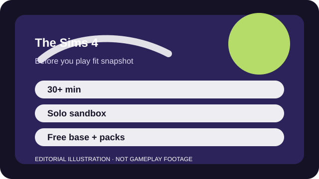

BEFORE YOU PLAY
What this page is and is not
This is a sourced editorial fit profile. It is designed to help with a yes-or-no play decision, and it does not claim a scored hands-on review.
The first fit check is whether creating routines and stories feels relaxing or directionless. If you like setting your own goals, the base game already reveals a lot about whether the series works for you.
The first-session loop to judge is simple: Create a household, build or manage a space, and let self-directed stories become the reason you keep playing.
Household stories, builds, collections, and pack systems create personal goals rather than competitive progression.

FIT SNAPSHOT
The Sims 4 at a glance
| Genre | Life simulation |
|---|---|
| Platforms | PC, PlayStation, Xbox |
| Business model | Free base game with optional paid expansions, kits, and packs. |
| Typical session | 30 minutes to several hours depending on how deep you go into one household or build. |
| Play style | solo sandbox storytelling |
| Learning barrier | Basic play is approachable, but building tools, aspirations, careers, and pack interactions can still snowball in scope. |
| Social shape | The Sims 4 is primarily solo and self-paced. |
WHO IT FITS
Best fit, likely friction, and the social reality
creative players who want storytelling, building, and self-directed household routines
players who need clear victory conditions or a complete all-in-one package without expansions
The Sims 4 is primarily solo and self-paced.
Household stories, builds, collections, and pack systems create personal goals rather than competitive progression.
FIRST SESSION PLAN
How to test the fit in one evening
- Play one small household before building a giant save or buying extra content.
- Learn pause, build, and needs-management controls early so the pacing feels calm instead of messy.
- Decide whether you care more about storytelling or architecture before browsing packs.
- Judge the base game on its own terms before assuming expansion marketing reflects what you need.
Use the first session to answer these fit questions instead of judging rank, win rate, or store value immediately.
- Do you enjoy inventing your own goals instead of following a fixed challenge path?
- Will paid packs feel like optional flavor or missing pieces to you?
- Are you looking for a solo decompress game rather than a competitive one?
TIME, COST, AND COMMITMENT
What you are really signing up for
| Session budget | 30 minutes to several hours depending on how deep you go into one household or build. |
|---|---|
| Social demand | The Sims 4 is primarily solo and self-paced. |
| Progression shape | Household stories, builds, collections, and pack systems create personal goals rather than competitive progression. |
| Spending pressure | The base game is free, but expansions and kits can turn the total cost into a long-tail decision. |
Sessions can stretch unexpectedly because there is rarely a hard stop point, but there is also no multiplayer schedule pressure pulling you back in.
The base game is free, but expansions and kits can turn the total cost into a long-tail decision.
SOURCES AND LIMITS
What was checked, and what can change
- Pack bundles and sales can change the value conversation quickly.
- Base-game updates may shift what new players can do without extra spending.
- PC mod compatibility or platform parity can change with updates outside the base fit question.
This profile uses official game pages and defensible general product knowledge to frame the player fit. It does not claim live testing across every platform, accessibility need, or current event rotation.